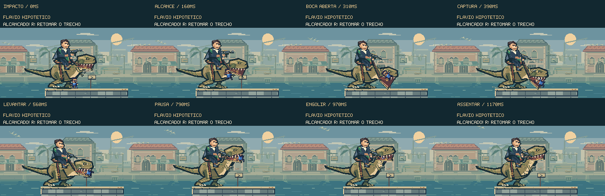
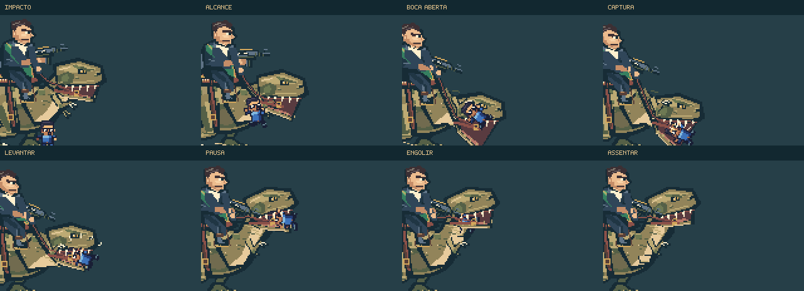
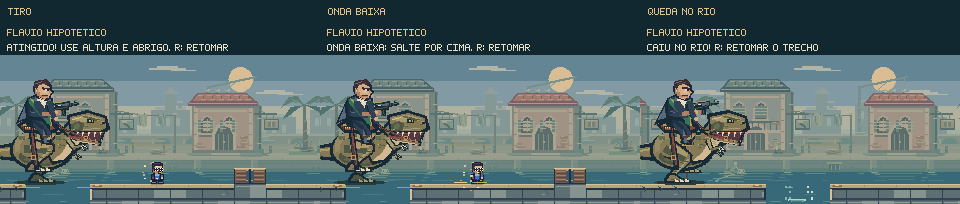

Ser alcançado
tem outro peso.
Quando o dinossauro alcança Feka sem proteção, o impacto inicia uma captura: ele freia, abre a mandíbula, apanha Feka, ergue a cabeça e engole. O cavaleiro acompanha a mudança de peso e segura as rédeas.
Jogar a perseguição →Ver a sequência ↓
Uma captura curta, com começo e fim.
10,27 segundos de animação dirigida, sem áudio. Posições e tempos foram compostos com os renderizadores do jogo. A prévia não é uma gravação de partida.
O impacto lança Feka em um arco curto. A cabeça desce para recebê-lo; a mandíbula fecha, sustenta o personagem e sobe. Os pés assentam enquanto o cavaleiro reage à freada.
A sequência completa dura 1,91 segundo, incluindo o fechamento da tela. R permite retomar o trecho imediatamente. O capacete e o período de proteção continuam funcionando antes de um contato fatal.
Feka continua sendo Feka.

A engolida esconde o personagem atrás do lábio e da garganta, sem reduzir o sprite até desaparecer. A roupa, as rédeas, a cauda e a postura do cavaleiro desaceleram junto com a ação. Há sons próprios para o alcance, a captura e a engolida.
A derrota explica o perigo.

Tiros mantêm a reação nativa e recebem um rastro curto de impacto. Ondas levantam fragmentos baixos. Ao cair, os pés atravessam a linha da água, surgem respingos e as ondas continuam até o fechamento da tela.
Os destroços já em queda continuam sua animação durante a derrota. Pausa, reinício e saída encerram ou congelam os efeitos conforme o estado do jogo. Movimento reduzido mantém a ação principal, reduz partículas e elimina o deslocamento extra da câmera.